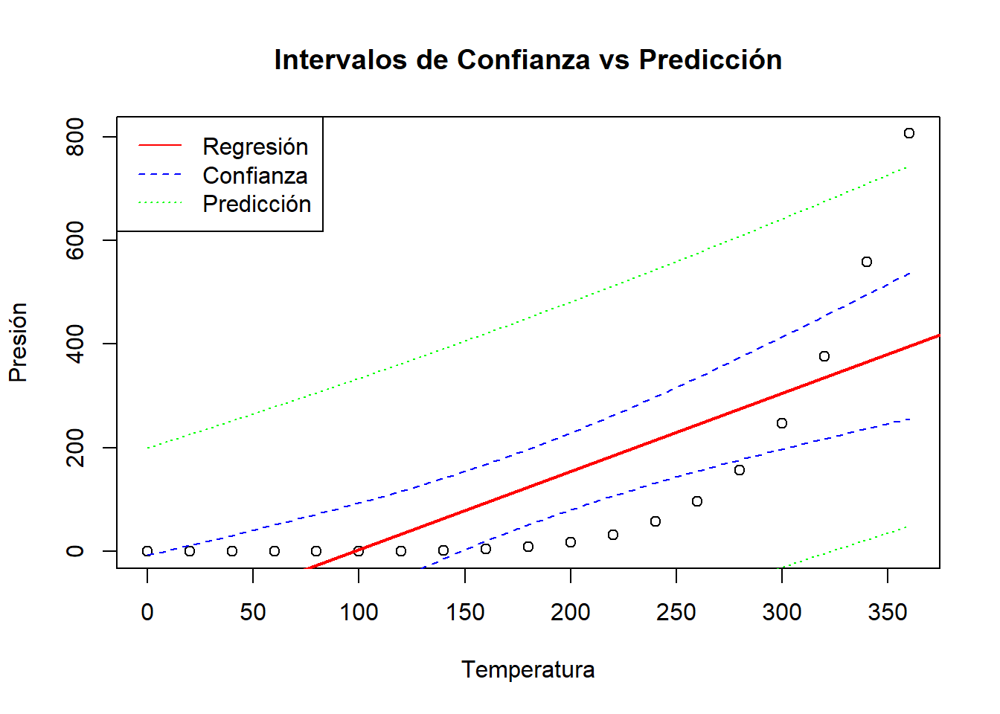
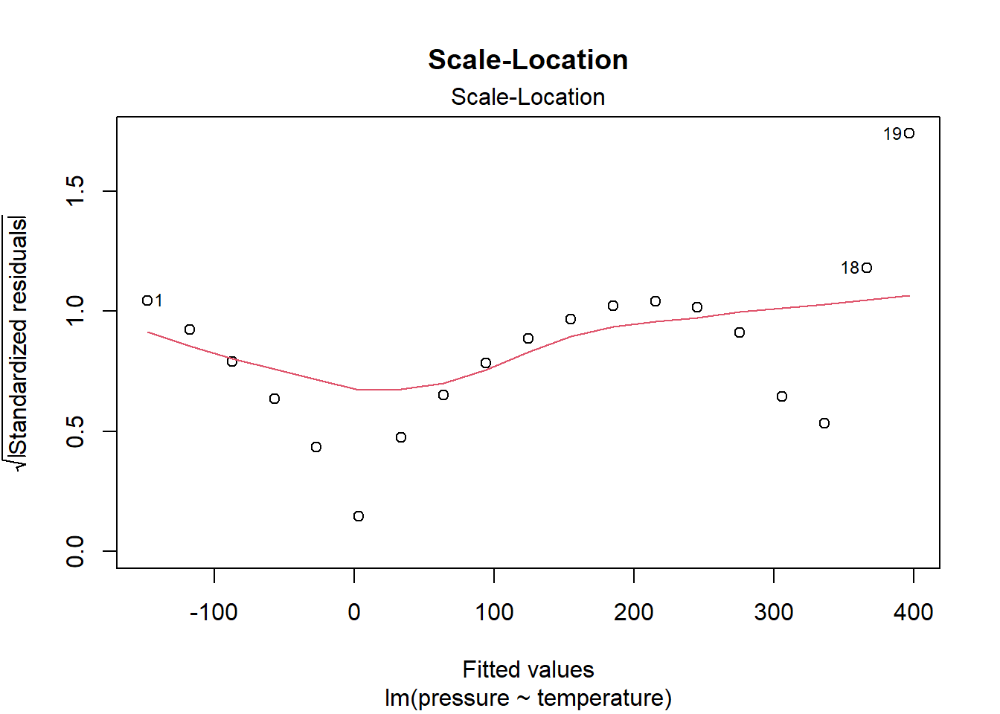

# Cálculo directo
gasto_30 = 1500 + 12 * 30
print(paste("Gasto predicho:", gasto_30, "euros"))[1] "Gasto predicho: 1860 euros"En este capítulo encontrarás las soluciones detalladas a todos los ejercicios del Tema 1. Cada ejercicio incluye tanto el enunciado como la solución completa con código R y explicaciones teóricas.
Basándote en el texto, explica con tus propias palabras por qué un coeficiente de correlación de Pearson (\(r\)) alto no es suficiente para modelar una relación y por qué la regresión lineal es un paso más allá. Menciona al menos dos cosas que el modelo de regresión proporciona y que la correlación por sí sola no ofrece.
La correlación de Pearson (\(r\)) solo mide la fuerza y dirección de una relación lineal entre dos variables, pero no es suficiente para modelar porque:
No proporciona un modelo predictivo: La correlación solo nos dice qué tan relacionadas están las variables, pero no nos permite hacer predicciones específicas sobre una variable a partir de la otra.
No cuantifica el cambio: No nos dice cuánto cambia una variable cuando la otra cambia en una unidad específica.
La regresión lineal va más allá porque proporciona:
Capacidad predictiva: Permite predecir valores específicos de la variable dependiente para valores dados de la independiente.
Cuantificación del cambio: Los coeficientes nos dicen exactamente cuánto cambia Y por cada unidad de cambio en X.
Intervalos de confianza y predicción: Permite cuantificar la incertidumbre de nuestras estimaciones.
Marco para inferencia estadística: Permite realizar pruebas de hipótesis sobre la significancia de la relación.
Un analista ajusta un modelo para predecir el gasto anual en compras online (gasto, en euros) basándose en la edad del cliente (edad). El modelo ajustado es:
gasto = 1500 + 12 * edad
a) Gasto predicho para un cliente de 30 años:
# Cálculo directo
gasto_30 = 1500 + 12 * 30
print(paste("Gasto predicho:", gasto_30, "euros"))[1] "Gasto predicho: 1860 euros"b) Interpretación de la pendiente (12): Por cada año adicional de edad del cliente, se espera que el gasto anual en compras online aumente en 12 euros, manteniendo todo lo demás constante.
c) Interpretación del intercepto (1500): Representa el gasto predicho para un cliente de 0 años, que sería 1500 euros. Esta interpretación NO tiene sentido práctico porque:
Utiliza el conjunto de datos pressure de R, que contiene mediciones de temperatura y presión de vapor de mercurio.
pressure) en función de la temperatura (temperature). Guarda el modelo en un objeto.summary() sobre el objeto del modelo.a) Ajustar el modelo:
modelo_pressure <- lm(pressure ~ temperature, data = pressure)b) Summary del modelo:
summary(modelo_pressure)
Call:
lm(formula = pressure ~ temperature, data = pressure)
Residuals:
Min 1Q Median 3Q Max
-158.08 -117.06 -32.84 72.30 409.43
Coefficients:
Estimate Std. Error t value Pr(>|t|)
(Intercept) -147.8989 66.5529 -2.222 0.040124 *
temperature 1.5124 0.3158 4.788 0.000171 ***
---
Signif. codes: 0 '***' 0.001 '**' 0.01 '*' 0.05 '.' 0.1 ' ' 1
Residual standard error: 150.8 on 17 degrees of freedom
Multiple R-squared: 0.5742, Adjusted R-squared: 0.5492
F-statistic: 22.93 on 1 and 17 DF, p-value: 0.000171c), d) y e) Interpretación de la Salida del Modelo
La forma más eficiente de analizar el modelo es observar directamente la salida de la función summary().
A partir de esta salida, interpretamos:
c) Coeficiente de determinación R²: El valor de Multiple R-squared es 0.5742. Esto significa que la temperatura explica el 57.42% de la variabilidad en la presión.
d) p-valor del estadístico F: En la última línea, el p-value del F-statistic es 0.000171. Al ser un valor muy inferior a 0.05, rechazamos la hipótesis nula (\(H_0\)) de que el modelo no tiene capacidad predictiva. Concluimos que el modelo es globalmente significativo.
e) Significancia del coeficiente: En la tabla de coeficientes, el p-valor (Pr(>|t|)) para temperature es 0.000171. Rechazamos la hipótesis nula (\(H_0: \beta_1 = 0\)) y concluimos que la temperatura tiene una relación estadísticamente significativa con la presión.
Usando el modelo del ejercicio anterior (lm(pressure ~ temperature, data = pressure)):
a) Intervalo de confianza para la media cuando temp = 250:
ic_mean <- predict(modelo_pressure, newdata = data.frame(temperature = 250),
interval = "confidence", level = 0.95)
print("Intervalo de confianza (95%) para la presión media:")[1] "Intervalo de confianza (95%) para la presión media:"print(ic_mean) fit lwr upr
1 230.2061 143.5771 316.8351b) Intervalo de predicción para una nueva observación:
ic_pred <- predict(modelo_pressure, newdata = data.frame(temperature = 250),
interval = "prediction", level = 0.95)
print("Intervalo de predicción (95%) para una nueva observación:")[1] "Intervalo de predicción (95%) para una nueva observación:"print(ic_pred) fit lwr upr
1 230.2061 -99.5663 559.9785c) Comparación de anchos:
ancho_conf <- ic_mean[3] - ic_mean[2]
ancho_pred <- ic_pred[3] - ic_pred[2]
print(paste("Ancho intervalo confianza:", round(ancho_conf, 2)))[1] "Ancho intervalo confianza: 173.26"print(paste("Ancho intervalo predicción:", round(ancho_pred, 2)))[1] "Ancho intervalo predicción: 659.54"Una visualización ayuda a entender la diferencia al instante:
# Crear gráfico con bandas de confianza y predicción
temp_range <- seq(min(pressure$temperature), max(pressure$temperature), length.out = 100)
conf_bands <- predict(modelo_pressure, newdata = data.frame(temperature = temp_range),
interval = "confidence", level = 0.95)
pred_bands <- predict(modelo_pressure, newdata = data.frame(temperature = temp_range),
interval = "prediction", level = 0.95)
plot(pressure$temperature, pressure$pressure,
xlab = "Temperatura", ylab = "Presión",
main = "Intervalos de Confianza vs Predicción")
abline(modelo_pressure, col = "red", lwd = 2)
lines(temp_range, conf_bands[,"lwr"], col = "blue", lty = 2)
lines(temp_range, conf_bands[,"upr"], col = "blue", lty = 2)
lines(temp_range, pred_bands[,"lwr"], col = "green", lty = 3)
lines(temp_range, pred_bands[,"upr"], col = "green", lty = 3)
legend("topleft", legend = c("Regresión", "Confianza", "Predicción"),
col = c("red", "blue", "green"), lty = c(1, 2, 3))
En el gráfico, las bandas de confianza (las más internas) definen el rango probable para la media de la presión a una temperatura dada. Las bandas de predicción (las más externas y anchas) definen el rango probable para una única observación futura de presión.
c) ¿Cuál es más ancho?
El intervalo de predicción es más ancho porque incluye dos fuentes de incertidumbre:
Enumera los cuatro supuestos del modelo de regresión lineal clásico (también conocidos como supuestos de Gauss-Markov) y explica brevemente la importancia de cada uno.
Los cuatro supuestos de Gauss-Markov son:
Linealidad: La relación entre X e Y es lineal. Importante porque si no se cumple, las predicciones serán sistemáticamente erróneas.
Independencia: Las observaciones son independientes entre sí. Crucial para que los errores estándar sean correctos.
Homocedasticidad: La varianza de los errores es constante. Necesario para que los intervalos de confianza y las pruebas de hipótesis sean válidas.
Normalidad de los errores: Los errores siguen una distribución normal. Importante para la validez de las pruebas de hipótesis y los intervalos de confianza.
Para el modelo del ejercicio 3:
a) Gráfico de Residuos vs. Valores Ajustados:
par(mfrow = c(1, 2))
plot(modelo_pressure, which = 1, main = "Residuos vs. Valores Ajustados")
b) Gráfico Scale-Location:
plot(modelo_pressure, which = 3, main = "Scale-Location")
a) Linealidad: En el gráfico de residuos vs. valores ajustados, observamos un patrón curvado en lugar de una distribución aleatoria alrededor de cero. Esto indica que NO se cumple perfectamente el supuesto de linealidad.
b) Homocedasticidad: En el gráfico Scale-Location, la línea roja muestra una tendencia creciente, lo que sugiere heterocedasticidad (varianza no constante). Un problema de heterocedasticidad se manifestaría como un patrón de embudo o una tendencia clara en este gráfico.
Un buen análisis no termina al detectar un problema, sino al proponer una solución.
Contexto: El mal ajuste del modelo tiene una razón física. La relación entre temperatura y presión de vapor no es lineal, sino exponencial.
Solución: Para corregirlo, aplicamos una transformación para linealizar la relación. La más común es el logaritmo natural sobre la variable respuesta.
# 1. Ajustamos un nuevo modelo con log(pressure)
modelo_log <- lm(log(pressure) ~ temperature, data = pressure)
# 2. Generamos los nuevos gráficos de diagnóstico
par(mfrow = c(1, 2))
plot(modelo_log, which = 1) # Linealidad
plot(modelo_log, which = 3) # Homocedasticidad
Como se puede observar, en los nuevos gráficos el patrón curvado ha desaparecido y la varianza de los residuos es mucho más constante. Esto demuestra cómo el diagnóstico nos lleva a mejorar y validar nuestro modelo.
Para el modelo del ejercicio 3:
a) Gráfico Normal Q-Q:
par(mfrow = c(1, 1))
plot(modelo_pressure, which = 2, main = "Normal Q-Q Plot")
b) Test de Shapiro-Wilk:
shapiro_test <- shapiro.test(residuals(modelo_pressure))
print("Test de Shapiro-Wilk para normalidad de residuos:")[1] "Test de Shapiro-Wilk para normalidad de residuos:"print(shapiro_test)
Shapiro-Wilk normality test
data: residuals(modelo_pressure)
W = 0.89337, p-value = 0.03697a) Q-Q Plot: Los puntos se desvían considerablemente de la línea diagonal, especialmente en las colas, indicando que los residuos no siguen una distribución normal.
b) Test de Shapiro-Wilk: Con p-valor < 0.05, rechazamos la hipótesis nula de normalidad. Los residuos no son normales.
Conexión con el Ejercicio 6: Es importante destacar que la falta de linealidad (detectada en el ejercicio anterior) es frecuentemente la causa raíz de la no normalidad en los residuos. Al corregir el problema estructural del modelo con la transformación logarítmica, el supuesto de normalidad también mejora de forma significativa.
Explica qué representan la Suma de Cuadrados Total (SST), la Suma de Cuadrados de la Regresión (SSR) y la Suma de Cuadrados del Error (SSE). ¿Cuál es la ecuación fundamental que las relaciona?
SST (Suma de Cuadrados Total): Mide la variabilidad total en Y alrededor de su media. \(SST = \sum(y_i - \bar{y})^2\)
SSR (Suma de Cuadrados de la Regresión): Mide la variabilidad explicada por el modelo. \(SSR = \sum(\hat{y}_i - \bar{y})^2\)
SSE (Suma de Cuadrados del Error): Mide la variabilidad no explicada (residual). \(SSE = \sum(y_i - \hat{y}_i)^2\)
Ecuación fundamental: \(SST = SSR + SSE\)
Esta descomposición permite calcular el coeficiente de determinación: \(R^2 = \frac{SSR}{SST} = 1 - \frac{SSE}{SST}\)
Basado en la teoría de los apuntes:
a) Tipos de residuos:
Residuo simple (\(e_i\)): \(e_i = y_i - \hat{y}_i\). Diferencia bruta entre observado y predicho.
Residuo estandarizado: \(\frac{e_i}{\hat{\sigma}}\). Residuo dividido por la desviación estándar residual.
Residuo estudentizado: \(\frac{e_i}{\hat{\sigma}_{(i)}\sqrt{1-h_{ii}}}\). Usa la desviación estándar calculada sin la observación i-ésima.
Los estudentizados se prefieren porque tienen propiedades estadísticas más estables y siguen una distribución t conocida.
b) Medidas de influencia:
Leverage (\(h_{ii}\)): Mide qué tan extrema es una observación en el espacio de las X. Valores altos indican observaciones con valores de X inusuales.
Distancia de Cook (\(D_i\)): Mide el cambio en las predicciones si se elimina la observación i. Combina residuo y leverage.
Sí, una observación puede tener leverage alto pero no ser influyente si está cerca de la línea de regresión (residuo pequeño).
En el contexto exclusivo de la regresión lineal simple, ¿qué relación matemática existe entre el estadístico F del test ANOVA y el estadístico t del test para la pendiente \(\beta_1\)? ¿Qué implica esto para sus respectivos p-valores?
En regresión lineal simple, existe una relación matemática exacta:
\[F = t^2\]
Donde:
Implicaciones para los p-valores:
Esta equivalencia solo se da en regresión simple. En regresión múltiple, el test F evalúa todos los coeficientes conjuntamente, mientras que cada test t evalúa coeficientes individuales.